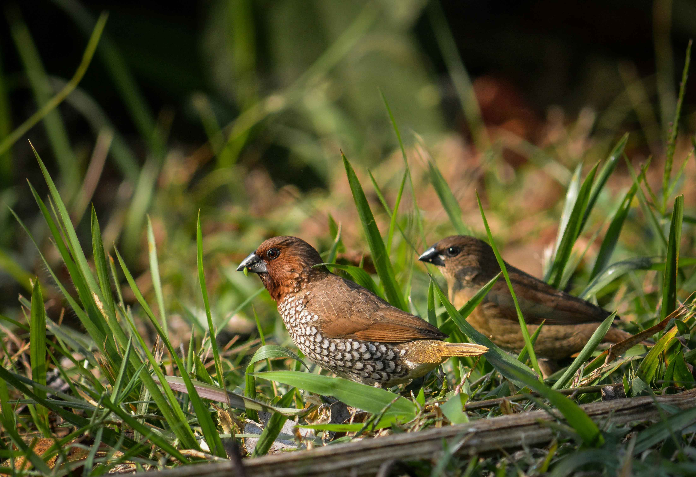

The Scaly-Breasted Munia is a small, compact finch-like bird with a chestnut head and upperparts and strongly scaled markings across the pale breast and belly. It feeds mainly on grass seeds and grains and is often found in flocks in grassland and agricultural areas. It is a common bird of fields, scrub, gardens, and areas of tall grass. Compared with the similar White-Rumped Munia, it is distinguished by the combination of features described above. Its preference for grassland, farmland, scrub, gardens, and reed beds also helps separate it from species that use different habitats. Its characteristic behaviour, including highly social and often forms flocks while feeding on the ground or in grasses, provides another useful field clue. Taken together, these differences make it easier to distinguish from similar species when the bird is seen clearly.